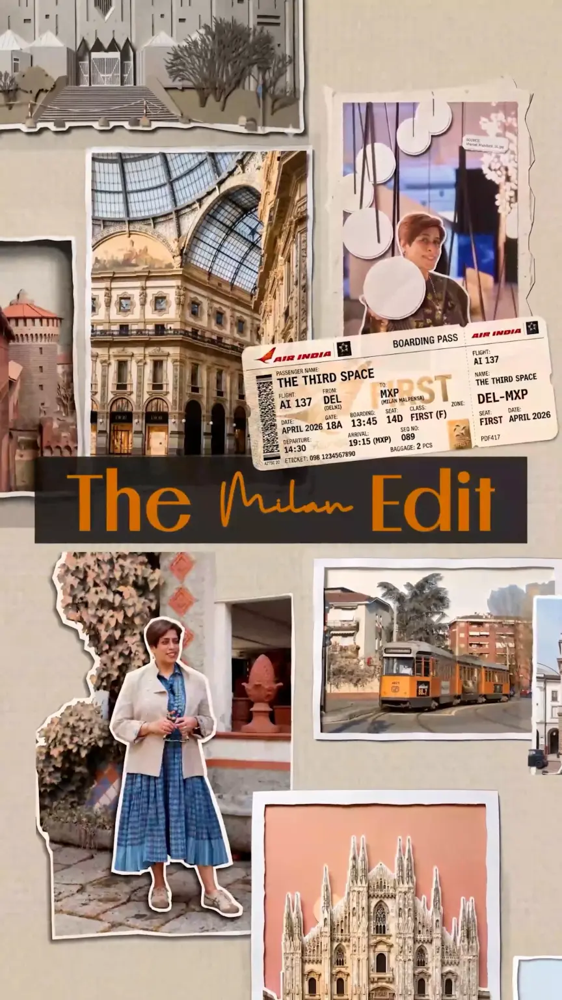

The Third Space
X Stir World
The Milan Edit
Set against the backdrop of Milan Fashion Week and Salone del Mobile, this podcast series brought together some of the biggest names in the world of design — including Marcel Wanders, Ross Lovegrove, Giulio Cappellini, and Maria Porro — hosted by Devika Khosla.
I worked across the entire season, taking the project beyond editing to shape its visual language, design system, and overall post-production. From pacing and framing to colour, sound, motion, and graphics, every element was designed to make each episode feel refined, cohesive, and premium.
The visual identity was inspired by Milan itself — its architecture, culture, design heritage, and unmistakable visual character — while also drawing from the design languages of The Third Space and STIR World.
Milan became a visual thread running throughout the series. In the background of the Intro, hand-drawn sketches reference the city's architecture, culture, and design; at the forefront, photographs of its most iconic places are layered with glimpses from the conversations and podcasts we recorded. The result was a visual system that connected the city, the people, and the world of design into one cohesive experience.
The biggest challenge was the environment itself. The episodes were filmed in uncontrolled, constantly moving spaces, with guests, people, and objects moving through the frame. Creating a polished visual experience from this required extensive work in colour correction, audio cleanup, reframing, and visual consistency.
The goal was simple: make every episode feel as considered and premium as the world of design it represented.
